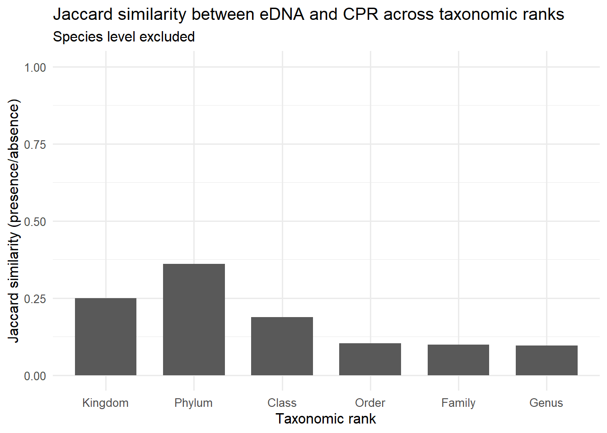
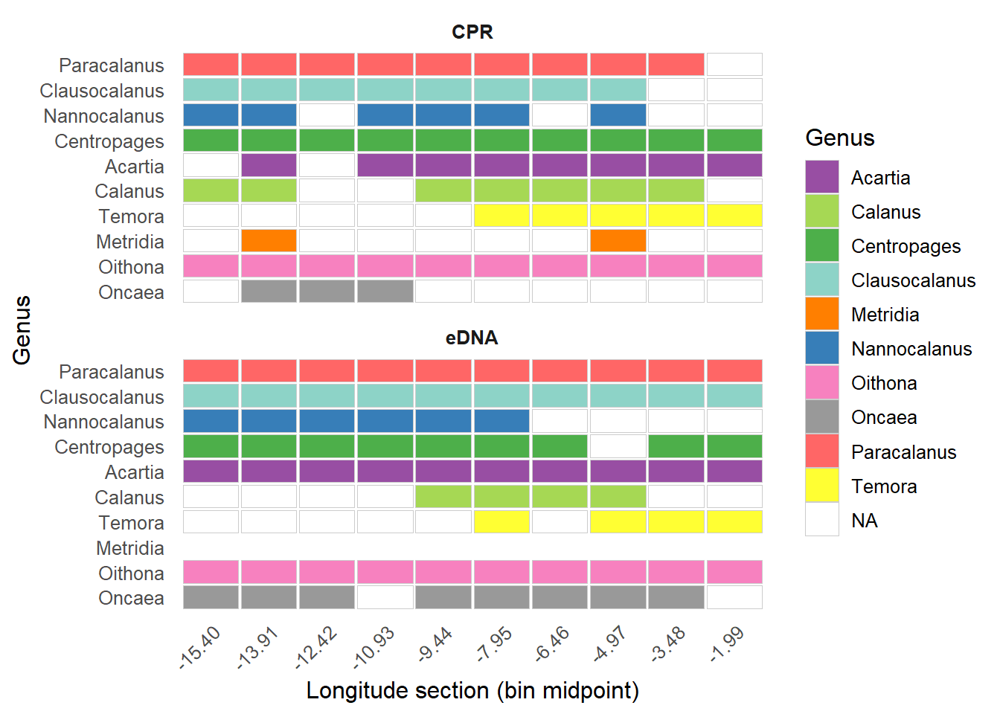

18S COI CPR
19 13 17 Discussion — Comparing CPR and eDNA: Dimensions of Diversity
The Continuous Plankton Recorder (CPR) and the RoCSI eDNA metabarcoding represent fundamentally different ways of observing plankton communities. Rather than asking whether these approaches agree or disagree, a more informative question is at what ecological and taxonomic scales they converge—and where their comparability breaks down.

| Category | # Phyla | Phyla |
|---|---|---|
| Shared by all | 0 | |
| Only 18S | 14 | Amoebozoa, Bacillariophyta, Bigyra, Chlorophyta, Choanozoa, Cryptophyta, Euglenozoa, Myzozoa, Oomycota, Protozoa_incertae_sedis_EXT, Radiozoa, Rhodophyta, Sulcozoa, Tracheophyta |
| Only COI | 5 | Annelida, Ctenophora, Nemertea, Platyhelminthes, Porifera |
| Only CPR | 4 | Cyanobacteria, Dinoflagellata, N/A, Radiolaria |
Let’s now merge that 2 eDNA metabarcoding datasets:
phyloseq-class experiment-level object
otu_table() OTU Table: [ 23191 taxa and 85 samples ]
sample_data() Sample Data: [ 85 samples by 8 sample variables ]
tax_table() Taxonomy Table: [ 23191 taxa by 21 taxonomic ranks ]
18S COI
5154 18037 compare presence/absence in eDNA vs CPR
| rank | n_edna | n_cpr | n_shared | perc_shared_edna | perc_shared_cpr |
|---|---|---|---|---|---|
| Kingdom | 4 | 6 | 2 | 50.0 | 33.3 |
| Phylum | 32 | 17 | 13 | 40.6 | 76.5 |
| Class | 82 | 25 | 17 | 20.7 | 68.0 |
| Order | 189 | 44 | 22 | 11.6 | 50.0 |
| Family | 288 | 65 | 32 | 11.1 | 49.2 |
| Genus | 366 | 89 | 40 | 10.9 | 44.9 |
| Species | 447 | 80 | 0 | 0.0 | 0.0 |
Note
eDNA detects far more taxonomic diversity than CPR, but overlap drops rapidly with taxonomic resolution; CPR diversity is largely a subset of eDNA at high ranks, while species-level agreement is essentially zero.
Quantifying agreement using similarity metrics per rank (Jaccard similarity)
Jaccard similarity was chosen to compare eDNA and CPR datasets because it provides a simple measure of shared taxa using presence–absence information

| Rank-by-rank taxonomic composition (presence/absence) | |||
| Comparison between eDNA and CPR datasets | |||
| eDNA taxa | CPR taxa | Shared taxa | |
|---|---|---|---|
| Kingdom | Animalia, Chromista, Plantae, Protozoa | Animalia, Bacteria, Fungi, N/A, Plantae, Protista | Animalia, Plantae |
| Phylum | Amoebozoa, Annelida, Arthropoda, Bacillariophyta, Bigyra, Bryozoa, Cercozoa, Chaetognatha, Chlorophyta, Choanozoa, Chordata, Ciliophora, Cnidaria, Cryptophyta, Ctenophora, Echinodermata, Euglenozoa, Foraminifera, Haptophyta, Mollusca, Myzozoa, Nemertea, Ochrophyta, Oomycota, Platyhelminthes, Porifera, Protozoa_incertae_sedis_EXT, Radiozoa, Rhodophyta, Rotifera, Sulcozoa, Tracheophyta | Arthropoda, Bryozoa, Cercozoa, Chaetognatha, Chordata, Ciliophora, Cnidaria, Cyanobacteria, Dinoflagellata, Echinodermata, Foraminifera, Haptophyta, Mollusca, N/A, Ochrophyta, Radiolaria, Rotifera | Arthropoda, Bryozoa, Cercozoa, Chaetognatha, Chordata, Ciliophora, Cnidaria, Echinodermata, Foraminifera, Haptophyta, Mollusca, Ochrophyta, Rotifera |
| Class | Acantharia, Amoebozoa_incertae_sedis_EXT, Annelida_EXT, Anthozoa, Apicomplexa_incertae_sedis, Ascidiacea, Asteroidea, Bacillariophyceae, Bicoecea, Bivalvia, Branchiopoda, Cephalopoda, Chlorarachnea, Chlorodendrophyceae, Chlorophyceae, Chlorophyta_EXT, Choanoflagellatea, Chrysophyceae, Coccolithophyceae, Colpodea, Conoidasida, Copepoda, Cryptophyceae, Cryptophyta_incertae_sedis, Demospongiae, Dictyochophyceae, Dinophyceae, Diplonemea, Discosea, Ebriophyceae, Echinoidea, Euglenoidea, Eurotatoria, Florideophyceae, Gastropoda, Glissodiscea, Gromiidea, Gymnolaemata, Heterotrichea, Hoplonemertea, Hydrozoa, Imbricatea, Kinetoplastea, Labyrinthulea, Leptocardii, Litostomatea, Magnoliopsida, Malacostraca, Mamiellophyceae, Metromonadea, Monadofilosa_EXT, Nephroselmidophyceae, Oligohymenophorea, Oligotrichea, Ophiuroidea, Ostracoda, Palaeonemertea, Pavlovophyceae, Pelagophyceae, Peronosporea, Phaeophyceae, Phyllopharyngea, Pilidiophora, Polychaeta, Polycystina, Prasinophyceae, Prostomatea, Protozoa_incertae_sedis_EXT, Prymnesiophyceae, Pyramimonadophyceae, Raphidophyceae, Rhabditophora_EXT, Sagittoidea, Scyphozoa, Spirotrichea, Tentaculata, Thaliacea, Thecofilosea, Thecostraca, Tubothalamea, Tubulinea, Ulvophyceae | Acantharea, Actinopterygii, Appendicularia, Bacillariophyceae, Bivalvia, Branchiopoda, Cyanophyceae, Dictyochophyceae, Dinophyceae, Gastropoda, Gymnolaemata, Hexanauplia, Hydrozoa, Malacostraca, N/A, Noctiluciphyceae, Oligohymenophorea, Ostracoda, Phaeophyceae, Prymnesiophyceae, Sagittoidea, Spirotrichea, Textulariina, Thaliacea, Thecostraca | Bacillariophyceae, Bivalvia, Branchiopoda, Dictyochophyceae, Dinophyceae, Gastropoda, Gymnolaemata, Hydrozoa, Malacostraca, Oligohymenophorea, Ostracoda, Phaeophyceae, Prymnesiophyceae, Sagittoidea, Spirotrichea, Thaliacea, Thecostraca |
| Order | Acantharia_incertae_sedis, Acanthoecida, Acochlidiimorpha_EXT, Adapedonta, Alcyonacea, Amoebozoa_incertae_sedis_EXT, Amphilepidida, Amphilothales, Amphipoda, Ancyromonadida, Anthoathecata, Aphragmophora, Apicomplexa_incertae_sedis_EXT, Apostomatida, Arthracanthida, Axinellida, Bacillariales, Bacillariophyceae_incertae_sedis_EXT, Bacillariophycidae_incertae_sedis_EXT, Bicoecida, Blastodiniales, Calanoida, Camarodonta, Canalipalpata_EXT, Cardiida, Carinomiformes, Caryophyllales, Cephalaspidea, Ceramiales, Chaetocerotanae_incertae_sedis, Chaetophorales, Cheilostomatida, Chlamydomonadales, Chlorachniida, Chlorodendrales, Chlorophyta_EXT, Chondrillida, Choreotrichida, Chromulinales, Cladophorales, Clypeasteroida, Coccidiniales, Coccolithales, Coccosphaerales, Colpodida, Corallimorpharia, Coscinodiscales, Craspedida, Cryomonadida, Cryptomonadales, Cryptophyta_incertae_sedis_EXT, Cyclopoida, Cymatosirales, Dactylopodida, Decapoda, Dendroceratida, Dictyochales, Dinophyceae_incertae_sedis, Dinophysiales, Diplonemida, Diplostraca, Dolichomastigales, Doliolida, Ebriales, Ectocarpales, Ericales, Ethmodiscales, Eubodonida, Eucoccidiorida, Euglyphida, Eugregarinorida, Euphausiacea, Euplotida, Euryalida, Exogenida, Florenciellales, Forcipulatida, Galeommatida, Gastrochaenida, Gonyaulacales, Gromiida, Gymnodiniales, Halocyprida, Halosphaerales, Haplosclerida, Haptorida, Harpacticoida, Hemiaulales, Heteronemertea, Heterotrichida, Hubrechtiiformes, Hypotrichia_EXT, Isochrysidales, Lamiales, Leptocardii_EXT, Leptocylindrales, Leptomyxida, Leptothecata, Licmophorales, Limnomedusae, Lithodesmiales, Littorinimorpha, Lobata, Lophodiniales, Mamiellales, Marimonadida, Melosirales, Metopiida, Miliolida, Monadofilosa_EXT, Monostilifera, Myida, Mysida, Mytilida, Narcomedusae, Nassellaria, Naviculales, Neogastropoda, Nephroselmidales, Noctilucales, Nolandida, Nudibranchia, Oegopsida, Oligotrichida, Oltmannsiellopsidales, Ophiacanthida, Ophiurida, Ostreida, Paraliales, Parmales, Patellogastropoda_EXT, Pavlovales, Paxillosida, Pedinellales, Pelagomonadales, Penicillaria, Peridiniales, Phaeocystales, Philasterida, Phlebobranchia, Phyllodocida, Pinguiochrysidales, Pleurobranchida, Pleurostomatida, Ploima, Poecilosclerida, Polychaeta_incertae_sedis_EXT, Polycladida, Prorocentrales, Prorodontida, Protoraphidales, Protozoa_incertae_sedis_EXT, Prymnesiales, Pseudoscourfieldiales, Pteropoda, Pyramimonadales, Pyrenomonadales, Pyrocystales, Pythiales, Rhizosoleniales, Sabellida, Sarcinochrysidales, Scalpellomorpha, Scleractinia, Sedentaria_EXT, Semaeostomeae, Siphonophorae, Sipuncula, Spatangoida, Spionida, Spumellaria, Suberitida, Suessiales, Terebellida, Tethyida, Tetractinellida, Thalassiosirales, Thaumatomonadida, Thecofilosea_incertae_sedis, Thoracosphaerales, Thraustochytrida, Trachymedusae, Trochida, Vannellida, Venerida, Verongiida, Verrucomorpha, Zoantharia, Zygodiscales | Amphipoda, Bacillariales, Bacteriastrales, Biddulphiales, Calanoida, Chaetocerotales, Cheilostomatida, Cladocera, Clupeiformes, Copelata, Copepoda, Corethrales, Cumacea, Cyclopoida, Decapoda, Dictyochales, Dinophysales, Doliolida, Euphausiacea, Gonyaulacales, Harpacticoida, Hemiaulales, Isochrysidales, Isopoda, Leptocylindrales, Lituolida, Mysida, N/A, Naviculales, Noctilucales, Oscillatoriales, Pedunculata, Peridiniales, Poecilostomatoida, Prorocentrales, Rhizosoleniales, Sessilida, Siphonophorae, Stomatopoda, Syracosphaerales, Thalassionematales, Thalassiosirales, Thecosomata, Tintinnida | Amphipoda, Bacillariales, Calanoida, Cheilostomatida, Cyclopoida, Decapoda, Dictyochales, Doliolida, Euphausiacea, Gonyaulacales, Harpacticoida, Hemiaulales, Isochrysidales, Leptocylindrales, Mysida, Naviculales, Noctilucales, Peridiniales, Prorocentrales, Rhizosoleniales, Siphonophorae, Thalassiosirales |
Table: Notable copepod genera identified from COI (eDNA) and CPR datasets.
| Genus | Why Notable | Shelf vs Open‑Ocean Pattern (<10° vs >10° longitude) | Evidence Source (COI / CPR) |
|---|---|---|---|
| Paracalanus | Most consistently abundant across longitudes | Broad, present in both regions | COI + CPR |
| Clausocalanus | Strong offshore abundance | Open ocean (>10°) | COI + CPR |
| Nannocalanus | Prominent peaks in offshore COI samples | Open ocean (>10°) | COI + CPR |
| Centropages | Clear blocks near shelf samples | Shelf (<10°) | COI + CPR |
| Acartia | Coastal‑type genus, repeating in shelf regions | Shelf (<10°) | COI + CPR |
| Calanus | Dominant in CPR at several shelf/slope stations | Shelf–slope | CPR only (not in COI top‑10) |
| Temora | Distinct CPR occurrences in shelf waters | Shelf (<10°) | CPR |
| Metridia | Offshore oceanic signature in CPR | Open ocean (>10°) | CPR |
| Oithona | High relative abundance in COI, minimal CPR representation | Broad, more offshore in COI | COI |
| Oncaea | COI‑specific peaks in offshore waters | Open ocean (>10°) | COI |
``
Note💬 Discussion
- Agreement across methods: Paracalanus, Clausocalanus, Nannocalanus, Centropages show consistent patterns in both plots (first four rows), giving confidence they are genuinely abundant and/or habitat‑associated as indicated. _ CPR‑leaning taxa: Calanus, Temora, Metridia are clearly visible in CPR but not in the COI top‑10 figure—likely reflecting net/ID strengths for these morphologically distinctive, larger calanoids. _ eDNA‑leaning taxa: Oithona, Oncaea appear strongly in COI but are minimal in CPR—consistent with CPR under‑capturing small/fragile forms and/or taxonomic resolution limits.
Combined figures
zooplankton

Next
- Presence/absence by region: Does agreement improve in high-biomass / high-diversity regions? –> Heatmap for the 10 copepods?
- comparing ecological groups: Zooplankton/phytoplankton only
- Sensitivity analysis: e.g. taxa present in ≥2 samples
A spectrum of biodiversity resolution
These methods can be viewed as sampling different dimensions of diversity along a continuum of biological detail:
CPR (morphological counts) primarily captures → large-bodied, abundant, and morphologically distinctive taxa → reflects biomass-dominant and ecologically conspicuous organisms → integrates over time and space due to net sampling and tow length
eDNA metabarcoding (18S, COI) captures → small, fragile, rare, cryptic, or early life stages → reflects presence and relative diversity, not biomass → is sensitive to extracellular DNA, transport, and detection limits
Because these approaches target different components of the community, direct one-to-one taxonomic comparisons are not always meaningful.